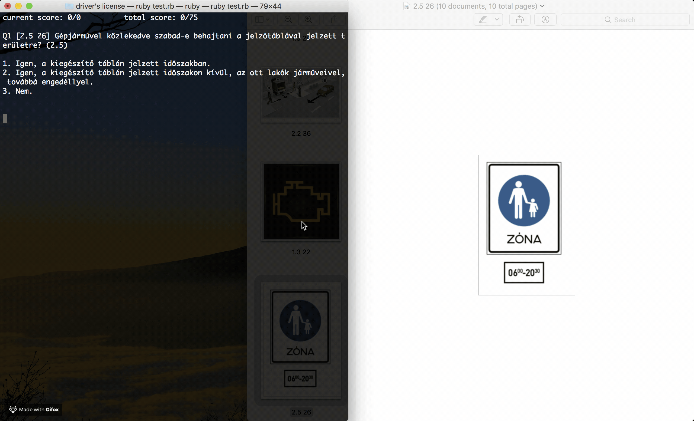

I am a university student transitioning from a mechatronics degree to a computer science degree. Still in school at
the moment, my sights are on either part-time or summer internship positions at IT companies before I start my new
degree. For the past year, I have been learning new skills related to coding and by far the most interesting field to me
is that of A.I. and machine learning. At the moment, however, I would gladly work in any job where I
can put any of my skills in tech to use in a professional setting.
Education
Budapest University of Technology and Economics
Mechatronics BSc.
2015-present
American International School of Budapest
High School and IB Diploma with 42 points
2012-2015
Coding Bootcamp in Montreal
Full Stack web development in Ruby on Rails
Summer 2018
Work Experience
Ind-App Kft.
Ind-App is short for industrial applications: Design, supply and commissioning of heat exchangers for district heating and industrial applications. I am the owner of the company and a designer.
2015-present
Volunteer work at Roskilde Festival (Denmark)
Counting and sorting used plastic cups for recycling.
Summer 2017
Math tutoring
Mostly for graduating high school students
2017-present
Skills
Python
Ruby
Ruby on Rails
C / C++
HTML, CSS, Sass, Javascript
Experience with Java
Teamwork
Git and Github
Experience with SQL, mySQL, SQLite and PostgreSQL
Experience with Octave and Matlab
Driven on optimizing algorithms
Some of my Projects
Path finding genetic algorithm
Small project, written almost entirely in Ruby. I am currently writing more of these in python as
well.
Nutri
Final project of the Le Wagon bootcamp. This is a nutritional website we developed in a team of 3
people
using the Ruby on Rails framework. I was in charge of most of the backend and did a fair bit
front-end
on a
couple of pages.

Driver's license quiz program
I was recently preparing for the driver's license theory exam, when I realized that I can build a
tool
that helps me learn faster by just practicing test questions. I scraped the official questions from
the
internet and coded a program that makes quizzes.